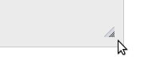
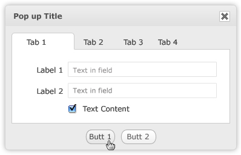
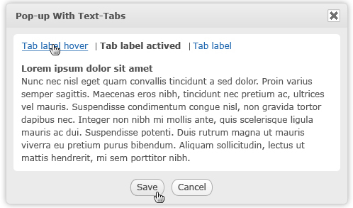
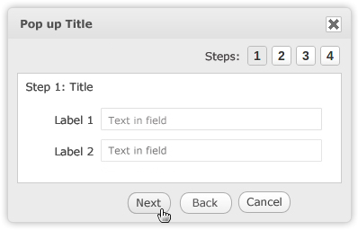

Using popups can be useful and a nice way to display advanced information. How and when Popups is used?
Pop-up window is a form displays when selecting an option or doing an action by mouse click or key board press.
Pop-up windows can be used to perform specific functions or simply notify necessary information to users.
This pattern provides a guide to use and display pop-up to obtain the consistency among applications. For example, when is a function interacted via pop-up? How does a pop up look?
Pop-up is useful and fast way to interact with a function, it is also to display advanced options over one element on the screen without having to lost the content.
Use when a content is suitable to display in a pop-up
Use when there is expectation to keep current page while interacting with more functions.
There are 2 options to define the pop up size
Keep the pop up size flexible depending on its elements to obtain good display and logical arrangement. Use the same default pop-up size for different products
Flexible Pop-up
The size from the edge of the content to the edge of the pop up should be 20px maximum.
Fixed Default Pop-up
Size(Pixel)
Description
310x150
Very Small Size. This can be used for functions that have 1 or 2 elements and short content display. This is minimum size that a pop up should have.
450x262
Small Size. This can be used for displaying functions that have 2-4 elements and short content display
550x320
Medium Size. This can be used for displaying functions that has 2-5 elements, medium content display, messages notification.
650x378
Large Size. This can be used for displaying functions that has 3-7 elements, long display.
750x436
Very Large Size. This can be used for displaying functions that has 5-10 elements, long content display
This is a nice feature that pop ups should to have to allow users to adjust the pop up size by them self.

A re-size icon can be put at the right bottom of a pop up that allows to drag and drop to define the size.The pop-up can be make to be bigger or smaller.
However, depending on the elements on the pop up, there should be a limitation to make sure the pop up still usable with minimum size.
This pop-up can be used for functions that all its elements can be displayed at once. The content is put in white text box

| Object | Style |
|---|---|
| Pop-up Title | Font Family: Verdana Font Size: 12px Font Weight: Bold Text Color: #4D4D4D Background: gradient |
| Pop-up Body | Background: #EDEDED |
| Text Content, Label | Font Family: Veranda Font Size: 12px Font Weight: Normal Text Color: #4D4D4D |
| Text in the Fields | Font Family: Verdana Size: 11 px Color:#999999 |
| White Box Border | Border:#E1E1E1 |
| Button | Mouse on: Dark gradient Mouse out: Light gradient |
This pop up with block tabs allows to display more content that can be grouped by tabs. The function on each tab may be independent together.

Different tabs have the same height and width when switching.The content is put in white text box.
| Object | Style |
|---|---|
| Pop-up Title | Font Family: Verdana Font Size: 12px Font Weight: Bold Text Color: #4D4D4D Background: gradient |
| Pop-up Body | Background: #EDEDED |
| Text Content, Tab Title, Label | Font Family: Veranda Font Size: 12px Font Weight: Normal Text Color: #4D4D4D |
| Text in the Fields | Font Family: Verdana Size: 11 px Color: #999999 |
| White Box Border | Border:#E1E1E1 |
| Button | Mouse on: Dark gradient Mouse out: Light gradient |
This pop up with text tabs allows to display more content that can be grouped by text tabs. Similarly to pop up with block tab, the function on each tab may be independent together.
Text tabs may suitable the content that having a lot text such as quick help, guides, rules...

Different tabs have the same height and width when switching.The content is put in white text box.
| Object | Style |
|---|---|
| Text Tab Selected | Font Family: Verdana Font Size: 12px Font Weight: Bold Text Color: #4D4D4D Background: gradient |
| Text Tab Mouse Hover | Font: Verdana Size: 12px Color:#246BB2 Text-Decoration: Underline |
| Text Tab by Default | Font: Verdana Size: 12px Color:#246BB2 |
| Pop-up Body | Background: #EDEDED |
| White Box Border | Border:#E1E1E1 |
| Button | Mouse on: Dark gradient Mouse out: Light gradient |
This pop up with steps can be used for a function that requests following many steps to finish.
In pop up with steps, the function on each steps is dependent together. You can only go to step 2 unless step 1 is completed correctly.

The content is put in white text box. Each steps has its correspondent title.
| Object | Style |
|---|---|
| Pop-up Title | Font Family: Verdana Font Size: 12px Font Weight: Bold Text Color: #4D4D4D Background: gradient |
| Pop-up Body | Background: #EDEDED |
| Text Content, Step, Title, Label | Font Family: Veranda Font Size: 12px Font Weight: Normal Text Color: #4D4D4D |
| Step Number | Font Family: Arial Font Size: 14px Font Weight: Bold Text Color: #4D4D4D |
| Text in the Field | Font Family: Verdana Size: 11 px Color: #999999 |
| White Box Border | Border:#E1E1E1 |
| Button(Steps, Action button) | Mouse on: Dark gradient Mouse out: Light gradient |
To obtain the consistency among applications in the way using and displaying actions/functions in pop-ups. This pattern let the designers know which functions they should put in page, which functions should be in pop-up. The consistency of pop-up style sheet and design makes your products look more professional.